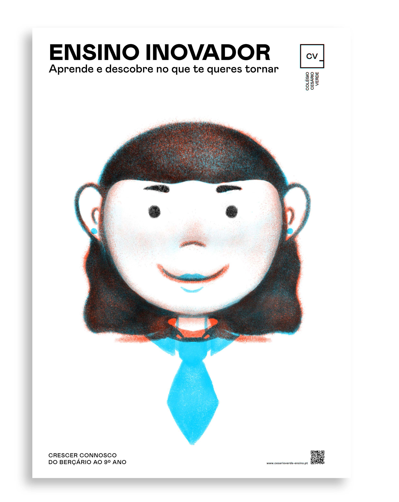

Campaign for Colégio Cesário Verde
Breaking Stereotypes
Breaking Stereotypes is a campaign that challenges misconceptions about arts-focused schools, aiming to show parents and the broader community that these institutions cultivate more than just artistic talents. Through four impactful illustrations, the campaign uses blue for uniformity and orange for diversity, portraying children growing into adults with careers such as a CEO, astronaut, chef, and footballer. The message is clear: an arts-centered education provides a broad foundation for students, empowering them to pursue any career they choose, without being confined to traditional stereotypes.

